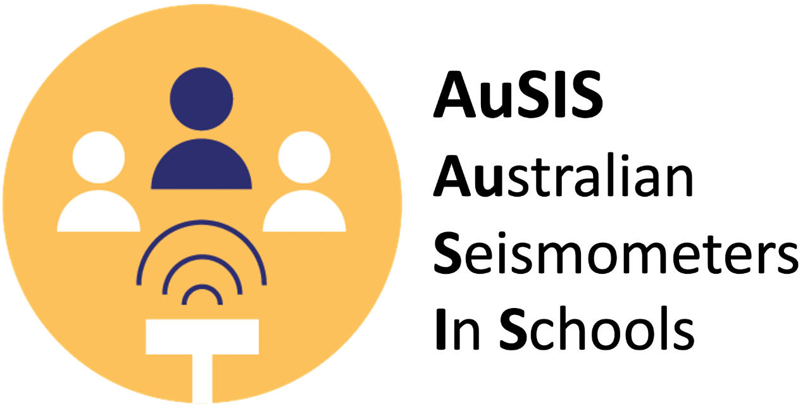

Loading…
Your seismometer, live
Earthquakes your seismometer caught recently
Checking the last 30 days…
AuSIS · Australian Seismometers in Schools · data via EarthScope & Geoscience Australia, updated automatically